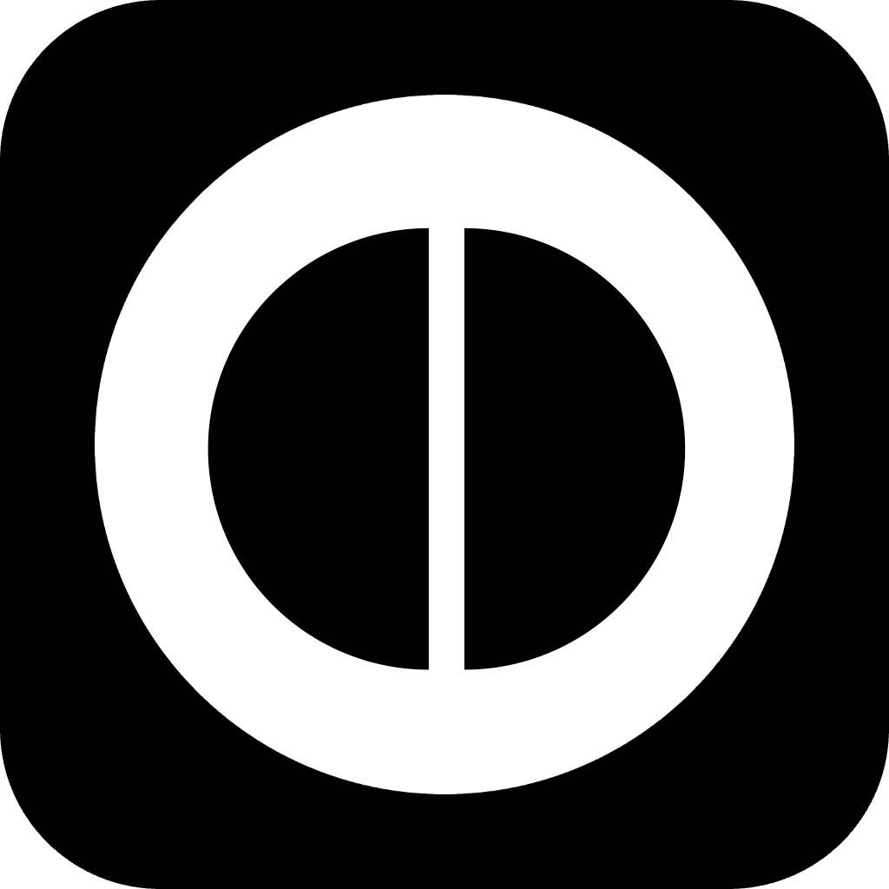

Além do detox digital: aplicativos de cancelamento de ruído para sua mente
Todos os dias, smartphones, redes sociais, notificações, notícias, anúncios e opiniões de outras pessoas disputam sua atenção.
Mas, mesmo quando você deixa o celular de lado, essa disputa não necessariamente termina.
O ruído vem tanto de fora quanto de dentro da sua mente.
Desligar a tela não significa necessariamente interromper os pensamentos que continuam ativos em segundo plano.
MINDBEBOP é uma família de pequenos aplicativos práticos, desenvolvidos para ajudar você a lidar com essas situações do dia a dia.
Não dizendo o que você deve pensar, mas oferecendo diferentes maneiras de interagir com seus pensamentos e sua atenção.
Você não precisa usar todos os aplicativos do MINDBEBOP. Comece por uma situação que reconhece na sua própria vida.
Você abre as redes sociais, fecha e abre novamente. Às vezes, nem sabe o que está procurando. Simplesmente sente vontade de conferir.
O que você pode fazer:
Crie uma barreira temporária entre você e os aplicativos que continuam atraindo sua atenção.
Dê a si mesmo um tempo longe deles.
Um bloqueador de aplicativos para sua mente.
Bloqueie temporariamente os aplicativos que você escolher e abra espaço para direcionar sua atenção a outras coisas.
Sempre há algo novo para ler, assistir, ouvir ou responder. Mesmo durante uma pausa, você continua absorvendo mais informações.
O que você pode fazer:
Pare de absorver novas informações por um tempo.
Dê tempo e espaço aos pensamentos que já existem, sem acrescentar constantemente outros novos.
Um espaço offline para sua mente.
Afaste-se das informações que chegam de fora e deixe que seus pensamentos cheguem naturalmente ao fim.
Algo que alguém disse. Algo que deu errado. Algo que você teme que possa acontecer. O mesmo pensamento continua voltando, mesmo quando você quer pensar em outra coisa.
O que você pode fazer:
Olhe para esse pensamento por outra perspectiva.
Você não precisa negar o que aconteceu nem fingir que está tudo bem.
Pode explorar outra maneira de enxergar a situação.

Um bloco de notas para inverter pensamentos.
Crie uma resposta mais leve para um pensamento pesado ou observe-o por outra perspectiva.
Algo que você precisa fazer amanhã. Algo que quer dizer a alguém. Algo sobre o qual quer pensar mais tarde. Você não precisa lidar com isso agora, mas também não quer esquecer.
O que você pode fazer:
Em vez de ficar se lembrando da mesma coisa, escolha outro momento para que esse pensamento volte.
Um bloco de notas para externalizar pensamentos.
Escolha outro momento para que um pensamento volte na forma de um lembrete.
Trabalho, família, dinheiro, saúde, tarefas pendentes, novas ideias, planos para o futuro e preocupações. Tudo isso pode coexistir na sua mente, disputando sua atenção ao mesmo tempo.
Sua casa tem prateleiras, gavetas, cômodos e móveis. Você pode dar a cada coisa seu próprio lugar, em vez de carregar tudo consigo o tempo inteiro.
E quanto aos seus pensamentos?
O que você pode fazer:
Dê aos seus pensamentos um lugar em um ambiente espacial.
Organize suas tarefas e projetos, agrupe pensamentos relacionados, explore ideias, mude de perspectiva ou simplesmente deixe algo onde está.
Um espaço de experimentação para Blocos de Pensamento.
Transforme pensamentos em Blocos de Pensamento dentro de um Espaço de Pensamentos tridimensional.
Mova-os, organize-os, explore-os ou trabalhe com eles por meio do Mobiliário de Pensamentos.
Um Bloco de Pensamento pode representar uma tarefa, um projeto, uma ideia, uma preocupação, uma lembrança ou qualquer outra coisa que esteja na sua mente. Você também pode vinculá-lo a Mental Steps quando quiser fazer algo com ele.
Algo pode continuar sendo importante sem precisar da sua atenção neste momento.
Você quer começar a trabalhar. Você quer parar de rolar a tela do celular. Você quer deixar o trabalho para trás e aproveitar sua noite. Você quer superar algo e seguir em frente.
Saber o que você quer nem sempre significa saber como chegar lá. E saber o que fazer nem sempre é suficiente para começar.
O que você pode fazer:
Em vez de tentar ir de onde você está até onde deseja estar de uma só vez, divida o percurso em pequenas ações fáceis de realizar.
O MINDBEBOP chama essas ações de Mental Steps.
Um Mental Step pode ser responder a uma pergunta, olhar para um pensamento de outra maneira, fazer uma pausa mental, bloquear um aplicativo que causa distração ou realizar alguma ação no mundo real.
Você não precisa descobrir todo o percurso de uma só vez. Só precisa saber qual é o próximo passo.
Um GPS para sua mente.
Avance por meio de Mental Steps em direção à sua Mental Destination (Ponto B).
O MindEntry guia você por meio de Mental Steps, desde onde está agora até a Mental Destination que você escolher.
Sua Mental Destination não precisa ser uma tarefa a ser concluída. Pode ser começar algo, deixar o trabalho para trás, tomar uma decisão, mudar seu estado mental ou agir no mundo real.
Os Mental Steps também podem incorporar outros aplicativos do MINDBEBOP ao seu percurso sempre que forem úteis.
Você escolhe seu destino. A rota pode mudar ao longo do caminho.
Você não precisa estar sempre mais concentrado.
Você não precisa estar sempre realizando alguma coisa.
Você não precisa estar sempre resolvendo um problema, respondendo a uma pergunta ou buscando se aprimorar.
Às vezes, você quer ir atrás de algo.
Às vezes, quer deixar algo de lado.
Às vezes, só quer ficar sentado.
O MINDBEBOP não tem como objetivo maximizar sua atenção nem tornar cada momento produtivo. Ele oferece diferentes maneiras de interagir com seus pensamentos, sem decidir o que você deve pensar ou o que merece sua atenção.
Sua atenção pertence a você. Você decide se quer usá-la e a que dedicá-la.
Muitos produtos digitais são desenvolvidos para manter você engajado. Mais tempo de uso, mais conteúdos visualizados, mais motivos para voltar.
O MINDBEBOP adota uma abordagem diferente.
Abra um aplicativo quando precisar dele.
Use-o enquanto for útil.
Feche-o quando quiser.
Se trinta segundos com uma ferramenta do MINDBEBOP forem suficientes, tudo bem. Se quiser passar uma hora explorando seus pensamentos no MindBackyard ou simplesmente ficar sentado com o MindZoneOut, tudo bem também.
O objetivo não é passar mais tempo com o MINDBEBOP. O objetivo é voltar à sua vida.
As ferramentas do MINDBEBOP podem ajudar você de três maneiras principais.
Reduzir
Reduza aquilo que solicita constantemente sua atenção.
Dê aos pensamentos outra perspectiva, outro momento ou outro lugar.
Crie distância das distrações quando precisar.
Navegar
Avance de onde você está agora em direção aonde deseja chegar, por meio de
Mental Steps.
Ancorar
Quando você chegar a um destino significativo,
o MindAnchor
permite preservar algo desse momento de chegada.
Essas são possibilidades, não etapas obrigatórias. Um pensamento pode precisar de apenas uma delas. Ou de nenhuma.
O detox digital consiste em se afastar dos dispositivos digitais e das informações que eles trazem para sua vida.
Mas e os pensamentos que continuam ativos depois que você desliga a tela?
O MINDBEBOP chama sua abordagem para reduzir o ruído e o atrito mental de Mental Background Detox.
Isso não significa necessariamente se livrar dos pensamentos. Significa ter diferentes maneiras de interagir com eles.
Um pensamento pode precisar de menos atenção.
Pode precisar de outra perspectiva.
Pode precisar de outro momento.
Pode precisar de um lugar onde existir.
Ou você pode decidir que há algum lugar aonde deseja chegar.
Os aplicativos e conceitos por trás dessa abordagem estão conectados por uma arquitetura chamada Mental Background OS.
O MINDBEBOP não é uma ferramenta de diagnóstico nem uma forma de terapia. É uma família de ferramentas para o dia a dia, que oferece diferentes maneiras de interagir com seus pensamentos e sua atenção.
MINDBEBOP
Aplicativos de cancelamento de ruído para sua mente.
Reduza o ruído e o atrito mental.
Dê aos pensamentos um lugar onde existir.
Navegue quando quiser chegar a algum lugar.
Ancore aquilo que vale a pena lembrar.
Copyright © 2026 MINDBEBOP — All rights reserved.